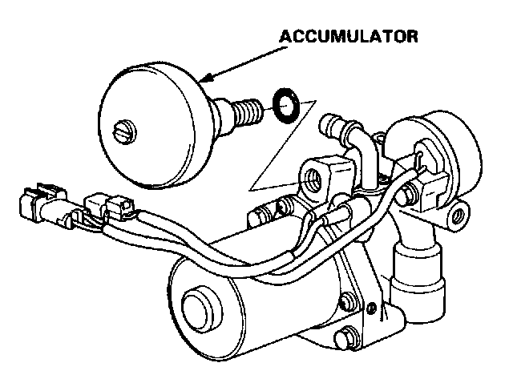

Accumulator Disposal
WARNING: The accumulator contains high pressure nitrogen gas. Do not puncture, expose to flame or attempt to disassemble the accumulator or it may explode and severe personal injury may result.Accumulator Disposal

1. Remove the accumulator.
2. Secure the accumulator in a vise so that the relief plug points straight up.
3. Slowly turn the plug 3-1/2 turns and then wait three minutes for all pressure to escape.

4. Remove the plug completely and dispose of the accumulator.